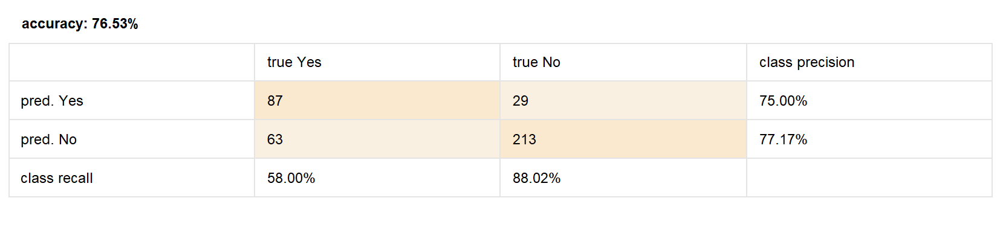

Practical Assignment 2
Modeling:
I loaded the dataset without missing values using the subprocess from the "Handling
Missing
Values" tutorial.
Then I used the following operators:
- Decision Tree: Classifies examples by splitting data into nodes based on attributes, creating a tree structure that helps predict outcomes based on hierarchical rules.
- Naive Bayes: Calculates the probability of each class assuming independence between attributes, used to classify examples.
- Rule Induction: Extracts rules from data to build interpretable and accurate models.
Scoring:
I loaded the dataset without missing values using the subprocess from the "Handling
Missing
Values" tutorial. After following the tutorial steps, an error occurred that
prevented me
from executing the process:
"The input ExampleSet does not match the training. Missing attribute: 'Port of
Embarkation'". The solution was to exclude it from the subset of attributes
selected with the "Select Attributes" operator.
The output shows a table that provides the survival prediction, with two tables on
the right
indicating the confidence percentage for survival ("yes") or death ("no").
Test splits and validation:
I loaded the dataset without missing values using the subprocess from the "Handling
Missing
Values" tutorial. After following the tutorial steps, we arrived at the following
confusion
matrix.

The model predicted survivors with 75% accuracy and deceased individuals with 77.17%
accuracy.
Cross validation:
I loaded the previously prepared dataset. After following the steps, using the
cross-validation operator, I was able to split the model into two subsets: the
Training
subset trains the data with a decision tree, and the Testing subset validates it
using an
Apply Model operator and a Performance operator.
Visual model comparison:
The Compare ROCs operator allows the comparison of multiple classification models'
performance. In this tutorial, we compared Decision Tree, Naive Bayes, and Rule
Induction.

The graph shows each model's ability to distinguish between classes. If all curves
tend
towards the top-left corner, the models are more effective than random
selection.
Naive Bayes has the curve farthest from the top-left corner, indicating the worst
performance of the three models for this dataset.
The ROC allows us to determine which model has better predictive ability, but
results may
vary with different datasets.